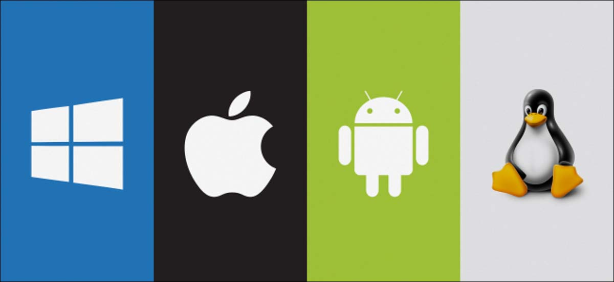

Operating Systems
Home
Types
Components
Resources
Browser and Platform Market Share September 2021
Top 5 Desktop, Tablet and Console Browsers
OS Platform Statistics
Market Share Statistics for Internet Technologies
Linux still top embedded OS

What Is Linux: An Overview of the Linux Operating System
Twenty Years of Linux according to Linus Torvalds
Strategy Analytics: Android Captures Record 88 Percent Share of Global Smartphone Shipments in Q3 2016
Desktop Operating System Market Share Worldwide